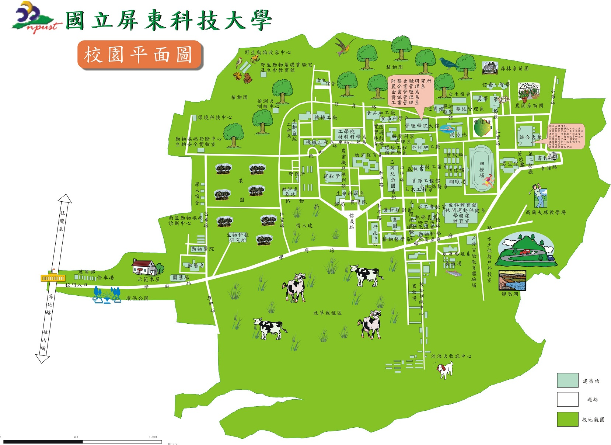

屏科大管理學院
網址:http://management.npust.edu.tw/bin/home.php
野生動物收容中心
網址:http://ptrc.npust.edu.tw/
獸醫系
網址:http://vm.npust.edu.tw/site/index.aspx
流浪犬收容中心
網址:https://www.flickr.com/photos/pobby-dog/sets/72157629316136728/
靜思湖
網址:http://exted.npust.edu.tw/guide/intro_1.html

屏科大校園導覽地圖